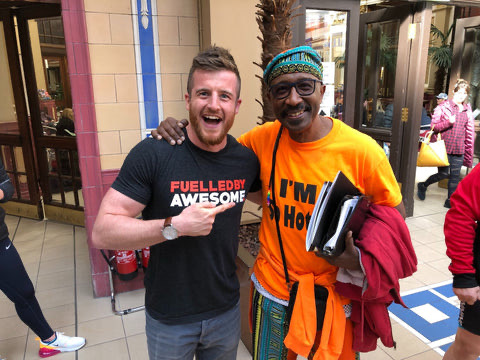
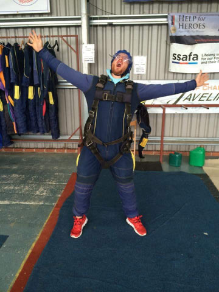

Why I want to live to 100, and why you will after reading this blog

If you follow my work it’s a known fact I want to live till I’m 100 years old and beyond, I mean, why wouldn’t you?
If you’re not that bothered about living until you’re 100 I’d question the quality and enjoyment you’re getting from your life, are you loving life?
Do you feel AWESOME?
Do you look forward to most days in your life? (I get not every day is a rainbow).
If not, let’s do something about it.
My reason to live to 100
The reason I want to live till I’m 100 and beyond is because there is simply too much to do in this life, the longer I can stay alive the more fun I can have, the more adventures I can go on, the more countries I can see, the more business’s I can start, the more people I can help, the more books I can read and write, the more fulfilment I will get from seeing more of my kids growing up, the more workouts I can do and challenge myself with, the more awesome beers I can drink, the more amazing meals I can have with family and friends, I could go on.
Why give up, why reside to hitting retirement and slowly dying, I mean come on, why stop, tell me?
This is a key motivation for me to try do the best by my body every day. I’m not a saint every day, no one is, that’s not fun, but it is a very large motivator of mine to eat well 80-90% of the time, to look after myself and sleep enough, to drink good fluids and keep moving, to get a healthy amount of sunshine, to develop a good amount of muscle mass to stay strong and support my bones, and to get outside and relax.
All of this, I hope, will contribute to me living a really long and fulfilling life. And I’m sure I’ll get even more militant about it as I see the effects of age over time.
I hear so many people just reside to getting older and letting the effects just sink in, like it's expected. People I speak to as young as 35 say stuff like “well it’s all downhill from here, I’m getting older now, what’s the point in trying?”.
Are you F***ing kidding?
I’m 36 as I write this and I’m one third of the way through my life and at no point am I thinking it’s getting worse; in fact, I think life is getting better. Because I’m wiser I know how to navigate life’s situations much better. I know what to say yes and no to a lot better, I know what’s a waste of money, I know what will be a waste of time, I know where fulfilment really comes from, I know how I really like to enjoy myself, and that’s only going to improve. I then cannot wait to pass all that wisdom on to my kids, to see them grow into awesome humans far quicker than I ever did because I’ll give them the wisdom earlier in life than I had it.
That’s super exciting to me.

Mr Motivator is 68 at the time of writing this blog, the man doesn’t look a day older than 40, fit, vibrant, passionate, love it!!
So if you’re sitting here reading this right now and you feel you’re that person, that you would happily reside to getting old and letting life just pass you buy, like you’re a passenger as the world moves, sit back now and question it, what’s actually stopping you living a long and awesome life?
Be honest for a moment. Not with me. With y\ourself.
Why are you not enjoying life?
Feel stressed? Anxious? Frustrated? Hate your job? Hate your spouse? Hate the situation you are in? Don’t know what you want out of life? Always wish you had gone travelling for a year? Wish you worked outdoors instead of in an office? Hate where you live? Family frustrate you? Feel like nothing goes your way?
Whatever it is from that list that’s stopping you from enjoying life, stop running away from those feelings. If you’re pissed off at something, if life is frustrating you, stop running away or medicating those feelings, get cosy with them, become at one with them, understand them, know why those feelings exist.
If you keep hiding from those feelings you’ll never confront them and do something about them, and yes you will reside to dying a slow death, not physically, but mentally, small parts of you will die every day as you choose pain and frustration over vitality and fulfilment.
And guess what?
Controlling your future outcome
You are in full control of the future outcome, you can choose to start thinking differently, acting differently, believing differently. Yes it might take some time, these things don’t work overnight, but it’s worth it, trust me.
You owe it to yourself to LIVE AN AWESOME LIFE.

But it starts with the painful process of looking in the eye of what causes that pain and frustration. You’ve got to stop hiding from it, confront it and start doing something about it.
If you, next year could be happy, strong, healthy, motivated and loving life, would you be up for that, to have that in one year’s time.
Awesome. Good. Let’s do it.
The issue for many people is we’re trying to solve all our problems in the space of a few weeks, or wishing they weren’t there at all.
Commit to changing it over the next year. This is how long this stuff takes.
Trust me, it’s worth it.
Cultivating passion
I didn’t just get born with the passion and zest for life I have now, I learnt how to cultivate it and realised it over time.
At the age of 18 as a free-thinking adult I did just decide to live an awesome life, it was a switch that just went off in my head. But I still didn’t know how to do it, it didn’t just happen overnight, I had to learn how to do it, but making the decision to was the first step which led me down the path to living my best life on my terms.
At 18 I used to be obese and suffer with many health issues, but it was that journey of getting healthier and losing weight that started this journey to living an awesome life.
Once I had lost weight and had a new found energy and confidence I saw a new level of potential for myself. I no longer had to be the jolly guy that everyone bullied and came last in every race, I could now compete, I felt good, I felt I could achieve things.
Get started
But it only happened because I started. Once you start and you see some initial results you start to prove things to yourself. When I started my journey, I was an overweight and unhealthy van driver that worked in a bar at the weekends to earn extra money.
Many years later I turned into a passionate, athletic, driven, energised, happy guy that went on to travel many countries, study many things in many places, move around to chase opportunities, experiment with my career to learn what fired me up, and generally took risks and experienced things to truly test who I was as a person.

Now many years later I sit here with 3 companies, a team of staff, respected in my industry, a lot of travel under my belt, an amazing wife, a beautiful home in the countryside, two beautiful kids, and a job and mission I jump out of bed for most days.
And it all started with that first step of me wanting to lose weight to be a better version of myself.
Question is, are you willing to start the journey?
Starting the journey
Yes I was 18 at the time and I am fortunate to have made that decision so early in my life, and you might be reading this at the age of 35, or 45, or 55, but that doesn’t matter, there are still a lot of years in front of you to optimise and improve and be better, question is, how do you want to live those years?
Pissed off, frustrated, in pain?
Or vibrant, healthy, happy?
If it’s the latter it’s time to stare that pain in the face, get comfortable with it, and commit to changing it.
There is a lot that’s in your control, so decide to take control of it.
Start to eat better. Start to move more. Start to get to bed at a good hour. Swap Netflix for learning new things that will help you grow. Find people, tools or books that can help you through your road blocks. Stay hydrated. Manage your stress. Book something you know you’ll look forward to. Set a new challenge for yourself.
There are no secrets to living till you're 100.
Sure, as technology evolves I’m sure medicine will help no end as it has done to this day to keep us alive and prolong life. But there is no point medicine keeping you alive if you’re in pain, pissed off and don’t really want to be alive.
You won’t be living a vibrant and awesome life.
So, the secret to living to 100?
Eat well. Move well. Look after yourself. Don’t stress too much. Get outside. Stay hydrated.
And above all, have many reasons to stay alive.
All things I talk about in my book ‘How to Live an Awesome Life’, which I can highly recommend. Grab a copy here:
https://amzn.to/3ELPneM